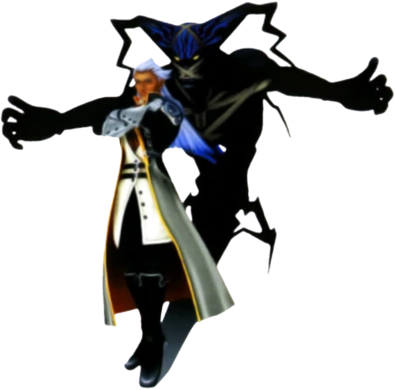

Ansem
Ansem, Seeker of Darkness is Xehanort's Heartless via Terra-Xehanort. His physical appearance closely resembles that of a youthful Master Xehanort. He serves as the main antagonist of Kingdom Hearts, Riku's "Reverse/Rebirth" story in Kingdom Hearts: Chain of Memories, and Rank II of the real Organization XIII in Kingdom Hearts 3D: Dream Drop Distance and Kingdom Hearts III.
Due to him having intentionally separated his heart from his body and soul before he gave into the darkness, Ansem retained his selfhood, and intelligence after his transformation into a Heartless. Because he could think out his plans and pass for a human, he was able to destroy nearly every world in the Kingdom Hearts universe without revealing his identity, up until he confronted Sora at the Final Keyhole in Hollow Bastion. Gaining a body after his time as the Robed Figure, he gains the Heartless Emblem, becoming an Emblem Heartless.